Cristiano Ronaldo (CR7)

Cristiano Ronaldo dos Santos Aveiro GOIH ComM (Portuguese pronunciation:
; born 5 February 1985) is a Portuguese professional footballer who plays as a forward for Serie A club Juventus and captains the Portugal national team. Often considered the best player in the world and widely regarded as one of the greatest players of all time, Ronaldo has won five Ballons d'Or[note 3] and four European Golden Shoes, both of which are records for a European player. He has won 32 major trophies in his career, including seven league titles, five UEFA Champions Leagues, one UEFA European Championship, and one UEFA Nations League title. Ronaldo holds the records for the most international goals (109, tied with Ali Daei), the most goals (134) and assists (42) in the Champions League, and the most goals in the European Championship (14). He is one of the few recorded players to have made over 1,100 professional career appearances and has scored over 780 official senior career goals for club and country.
Born and raised in Madeira, Ronaldo began his senior club career playing for Sporting CP,
before signing with Manchester United in 2003, aged 18. After winning the FA Cup in his first season, he helped United win three successive Premier League titles, the Champions League, and the FIFA Club World Cup; at age 23, he won his first Ballon d'Or. In 2009, Ronaldo was the subject of the then-most expensive association football transfer when he signed for Real Madrid in a transfer worth €94 million (£80 million). During his 9 seasons with Real Madrid, he won 15 trophies, including two La Liga titles, two Copas del Rey, and four Champions League titles, and became the club's all-time top goalscorer (451 times in 438 competitive appearances for Madrid, averaging over a goal a game).[9] After joining Madrid, Ronaldo finished runner-up for the Ballon d'Or three times, behind Lionel Messi – his perceived career rival – before winning back-to-back Ballons d'Or from 2013–2014 and again from 2016–2017. After winning a third consecutive Champions League title in 2018, Ronaldo
became the first player to win the trophy five times. In 2018, he signed for Juventus in a transfer worth an initial €100 million (£88 million)
, the highest fee ever paid by an Italian club and the highest ever paid for a player over 30 years old. He won two Serie A titles, two Supercoppa Italiana and a Coppa Italia in his first three seasons with the club.
Ronaldo made his senior international debut for Portugal in 2003 at age 18, and has since earned over 170 caps, including appearing and scoring in eleven major tournaments, becoming Portugal's most capped player and his country's all-time top goalscorer. He scored his first international goal at Euro 2004 where he helped Portugal reach the final and assumed full captaincy of the national team
in July 2008. In 2015 Ronaldo was named the best Portuguese player of all time by the Portuguese Football Federation. The following year he led Portugal to their first triumph in a major tournament by winning Euro 2016, and received the Silver Boot as the second-highest goalscorer of the tournament.
One of the most marketable and famous athletes in the world, Ronaldo was ranked the world's highest-paid athlete by Forbes in 2016 and 2017 and the world's most famous athlete by ESPN from 2016 to 2019. Time included him on their list of the 100 most influential people in the world in 2014. He is the first footballer, as well as only the third sportsman, to earn $1 billion in their career.
Birth Life
Cristiano Ronaldo dos Santos Aveiro was born in São Pedro, Funchal, on the Portuguese island of Madeira, and grew up in Santo António, Funchal.[9][10] He is the fourth and youngest child of Maria Dolores dos Santos Viveiros da Aveiro, a cook, and José Dinis Aveiro, a municipal gardener and part-time kit man.[11] His great-grandmother on his father's side, Isabel da Piedade, was from the island of São Vicente, Cape Verde.[12] He has one older brother, Hugo, and two older sisters, Elma and Liliana Cátia "Katia"
His mother revealed that she wanted to abort him due to poverty, his father's alcoholism and having too many children already, but her doctor refused to perform the procedure.[14] Ronaldo grew up in a Catholic and impoverished home, sharing a room with all his siblings
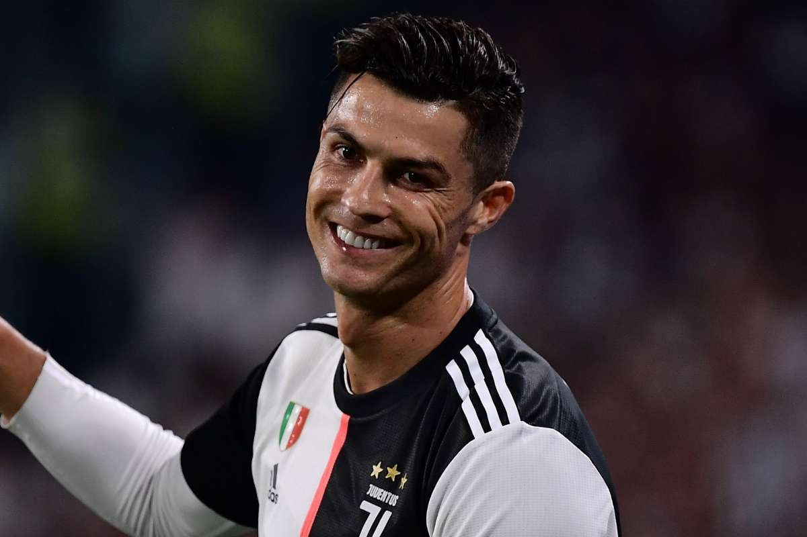
As a child, Ronaldo played for Andorinha from 1992 to 1995,
where his father was the kit man,[11] and later spent two years with Nacional. In 1997, aged 12, he went on a three-day trial with Sporting CP, who signed him for a fee of £1,500.
He subsequently moved from Madeira to Alcochete, near Lisbon, to join Sporting youth football academy By age 14, Ronaldo believed he had the ability to play semi-professionally, and agreed with his mother to cease his education in order to focus entirely on football. While popular with other students at school, he had been expelled after throwing a chair at his teacher, who he said had "disrespected" him. However, one year later, he was diagnosed with a racing heart, a condition that could have forced him to give up playing footbal Ronaldo underwent heart surgery where a laser was used to cauterise multiple cardiac pathways into one, altering his resting heart rate He was discharged from the hospital hours after the procedure and resumed training a few days later.He never graduated high school. Football came first. Some jokingly say that Cristiano majored in soccer with a minor in football. In an interview, his godfather recalled multiple times where the boy would sneak from his room to avoid school work and family dinners
He subsequently moved from Madeira to Alcochete, near Lisbon, to join Sporting youth football academy. By age 14, Ronaldo believed he had the ability to play semi-professionally, and agreed with his mother to cease his education in order to focus entirely on football.
School – Not known.
College – Sporting Academy.
Qualifications – Cristiano has no proper education,
When he was 17 he graduated from sporting academy
Sporting Career
Sports Club
At age 16, Ronaldo was promoted from Sporting's youth team by first-team manager László Bölöni, who was impressed with his dribbling.[22] He subsequently became the first player to play for the club's under-16, under-17 and under-18 teams, the B team, and the first team, all within a single season.[17] A year later, on 29 September 2002, Ronaldo made his debut in the Primeira Liga, against Braga and on 7 October 2002, he scored two goals against Moreirense in their 3–0 win.[23] Over the course of the 2002–03 season, his representatives suggested the player to Liverpool manager Gérard Houllier
and Barcelona president Joan Laporta.[24] Manager Arsène Wenger, who was interested in signing the winger, met with him at Arsenal's grounds in November to discuss a possible transfer.
Manchester United manager Alex Ferguson, however, was determined to acquire Ronaldo on a permanent move urgently, after Sporting defeated United 3–1 at the inauguration of the Estádio José Alvalade in August 2003. Initially, United had just planned to sign Ronaldo and then loan him back to Sporting for a year.
Having been impressed by him, however, the Manchester United players urged Ferguson to sign him. After the game, Ferguson agreed to pay Sporting £12.24 million[26] for what he considered to be "one of the most exciting young players" he had ever seen. A decade after his departure from the club, in April 2013, Sporting honoured Ronaldo by selecting him to become their 100,000th member.
2003–2007: Development and breakthrough
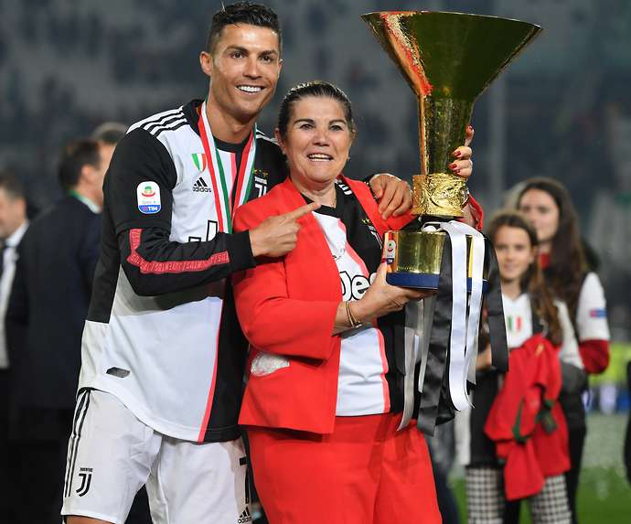
"There have been a few players described as 'the new George Best' over the years, but this is the first time it's been a compliment to me."
—Former Manchester United player George Best hails the 18-year-old Cristiano Ronaldo in 2003.[29]
Ronaldo became Manchester United's first Portuguese player when he signed before the 2003–04 season.
His transfer fee of £12.24 million made him, at the time, the most expensive teenager in English football history. Although he requested the number 28,
his number at Sporting, he received the number 7 shirt, which had previously been worn by such United players as George Best, Eric Cantona and David Beckham. Wearing the number 7 became an extra source of motivation for Ronaldo.[33] A key element in his development during his time in England proved to be his manager Alex Ferguson, of whom he later said: "He's been my father in sport, one of the most important and influential factors in my career."[34]
Ronaldo playing for Manchester United against Chelsea in the 2005–06 Premier League season
Ronaldo made his debut in the Premier League in a 4–0 home victory over Bolton Wanderers on 16 August 2003, receiving a standing ovation when he came on as a substitute.[35] His performance earned praise from George Best, who hailed it as "undoubtedly the most exciting debut" he had ever seen. Ronaldo scored his first goal for Manchester United with a free-kick in a 3–0 win over Portsmouth on 1 November
Three other league goals followed in the second half of the campaign,[37] the last of which came against Aston Villa on the final day of the season, a match in which he also received his first red card.[38] Ronaldo ended his first season in English football by scoring the opening goal in United's 3–0 victory over Millwall in the FA Cup final, earning his first trophy.[39] BBC pundit Alan Hansen described him as the star of the final. The British press had been critical of Ronaldo during the season for his "elaborate" step-overs in trying to beat a man,[41] but teammate Gary Neville said he was "not a show pony, but the real thing", and predicted he would become a world class player.
"He has got the tricks and party pieces, we know that, but they're not much good unless there is something at the end of it all. We still have to remember, of course, that the lad is only 19 years of age. Considering that, you have to say he has got massive talent. His feet are mesmerising at times, and if he can couple that
with some consistently good crossing, the future looks frightening."
—Former BBC pundit Alan Hansen commenting on Ronaldo after his first season.
At the start of 2005, Ronaldo played two of his best matches of the 2004–05 season, producing a goal and an assist against Aston Villa and scoring twice against rivals Arsenal.[43][44] He played the full 120 minutes of the FA Cup final against Arsenal which ended in a goalless draw,
and scored his attempt in the lost penalty shoot-out.[45] Ronaldo scored Manchester United's 1000th Premier League goal on 29 October, their only goal in a 4–1 loss to Middlesbrough.[46] Midway through the season, in November, he signed a new contract which extended his previous deal by two years to 2010. Ronaldo won his second trophy in English football, the Football League Cup, after scoring the third goal in United's 4–0 final victory over Wigan Athletic
During his third season in England, Ronaldo was involved in several incidents. He had a one-match ban imposed on him by UEFA for a "one-fingered gesture" towards Benfica fans,[49] and was sent off in the Manchester derby (a 3–1 defeat) for kicking Manchester City's former United player Andy Cole
Ronaldo clashed with a teammate, striker Ruud van Nistelrooy, who took offence at the winger's showboating style of play. Following the 2006 FIFA World Cup, in which he was involved in an incident where club teammate Wayne Rooney was sent off,[52] Ronaldo publicly asked for a transfer, lamenting the lack of support he felt he had received from the club
over the incident. United, however, denied the possibility of him leaving the club.[54]
Although his World Cup altercation with Rooney resulted in Ronaldo being booed throughout the 2006–07 season,
it proved to be his breakout year, as he broke the 20-goal barrier for the first time and won his first Premier League title. An important factor in this success was his one-to-one training by first-team coach René Meulensteen, who taught him to make himself more unpredictable, improve his teamwork, call for the ball, and capitalise on goalscoring opportunities rather than waiting for the chance to score the aesthetically pleasing goals for which he was already known. He scored three consecutive braces at the end of December, against Aston Villa (a victory that put United on top of the league), Wigan Athletic and Reading
Ronaldo was named the Premier League Player of the Month in November and December, becoming only the third player to receive consecutive honours
Collective and Individual Success
 At the quarter-final stage of the 2006–07 UEFA Champions League, Ronaldo scored his first goals in his 30th match in the competition
At the quarter-final stage of the 2006–07 UEFA Champions League, Ronaldo scored his first goals in his 30th match in the competition
finding the net twice in a 7–1 victory over Roma. He subsequently scored four minutes into the first semi-final leg against Milan, which ended in a 3–2 win, but was marked out of the second leg as United lost 3–0 at the San Siro.[64] He also helped United reach the FA Cup final, but the decisive match against Chelsea ended in a 1–0 defeat. Ronaldo scored the only goal in the Manchester derby on 5 May 2007 (his 50th goal for the club), as Manchester United claimed their first Premier League title in four years.
As a result of his performances, he amassed a host of personal awards for the season. He won the Professional Footballers' Association's Player's Player, Fans' Player, and Young Player of the Year awards, as well as the Football Writers'
Association's Footballer of the Year award,[67][68] becoming the first player to win all four main PFA and FWA honours.
His club wages were concurrently upgraded to £120,000 a week (£31 million total) as part of a five-year contract extension with United.[70] At the end of 2007, Ronaldo was named runner-up to Kaká for the Ballon d'Or
and came third, behind Kaká and Lionel Messi, in the running for the FIFA World Player of the Year award
Ronaldo scored his first and only hat-trick for Manchester United in a 6–0 win
against Newcastle United on 12 January 2008, bringing United up to the top of the Premier League table.
A month later, on 19 March, he captained United for the first time in a home win over Bolton, and scored both goals of the match.
His second goal was his 33rd of the campaign, which bettered George Best's total of 32 goals in the 1967–68 season, thus setting the club's new single-season record by a midfielder.
His 31 league goals earned him the Premier League Golden Boot,[ as well as the European Golden Shoe, which made him the first winger to win the latter award.
He additionally received the PFA Players' Player of the Year and FWA Footballer of the Year awards for the second consecutive season ]
In the knockout stage of the Champions League, Ronaldo scored the decisive goal against Lyon,
which helped United advance to the quarter-finals 2–1 on aggregate, and, while playing as a striker, scored with a header in the 3–0 aggregate victory over Roma.[81] United advanced to the final against Chelsea in Moscow, where, despite his opening goal being negated by an equaliser and his penalty being saved in the shoot-out,[82] Manchester United emerged victorious. As the Champions League top scorer, Ronaldo was named the UEFA Club Footballer of the Year.[
Ronaldo scored a total of 42 goals in all competitions during the 2007–08 season, his most prolific campaign during his
time in England. He missed three matches after headbutting a Portsmouth player at the start of the season, an experience he said taught him not to let opponents provoke him.
As rumours circulated of Ronaldo's interest in moving to Real Madrid, United filed a tampering complaint with governing body FIFA over Madrid's alleged pursuit of their player, but they declined to take action
FIFA president Sepp Blatter asserted that the player should be allowed to leave his club, describing the situation as "modern slavery" Despite Ronaldo publicly agreeing with Blatter,
he remained at United for another year
Ahead of the 2008–09 season, on 7 July, Ronaldo underwent ankle surgery, which kept him out of action for 10 weeks Following his return, he scored his 100th goal in all competitions for United with the first of two free kicks in a 5–0 win against Stoke City on 15 November, which meant he had now scored against all 19 opposition teams in the Premier League at the time
At the close of 2008, Ronaldo helped United win the FIFA Club World Cup in Japan,
assisting the final-winning goal against Liga de Quito and winning the Silver Ball in the process. He subsequently became United's first Ballon d'Or winner since George Best in 1968,[
] and the first Premier League player to be named the FIFA World Player of the Year.
His match-winning goal in the second leg against Porto, a 40-yard strike, earned him the inaugural FIFA Puskás Award, presented by FIFA in recognition of the best goal of the year; he later called it the best goal he had ever scored
United advanced to the final in Rome,[ ] where he made little impact in United's 2–0 defeat to Barcelona
Ronaldo ended his time in England with nine trophies, as United claimed their third successive Premier League title and a Football League Cup. He finished the campaign with 26 goals in all competitions, 16 goals fewer than the previous season, in four more appearances His final goal for United came on 10 May 2009 with a free kick in the Manchester derby at Old Trafford
World Record
Ahead of the 2009–10 season, Ronaldo joined Real Madrid for a world record transfer fee at the time, of £80 million (€94 million).[ ] His contract, which ran until 2015, was worth €11 million per year and contained a €1 billion buy-out clause. At least 80,000 fans attended his presentation at the Santiago Bernabéu, surpassing the 25-year record of 75,000 fans who had welcomed Diego Maradona at Napoli.
Since club captain Raúl already wore the number 7 (the number Ronaldo wore at Manchester United), Ronaldo received the number 9 shirt, which was presented to him by former Madrid player Alfredo Di Stéfano.[
Ronaldo made his debut in La Liga on 29 August 2009,
against Deportivo La Coruña, and scored from the penalty spot in Madrid's 3–2 home win.
He scored in each of his first four league fixtures with the club, the first Madrid player to do so.
His first Champions League goals for the club followed with two free kicks in the first group match against Zürich.[ His strong start to the season,
however, was interrupted when he suffered an ankle injury in October while on international duty, which kept him sidelined for seven weeks.
A week after his return, he received his first red card in Spain in a match against Almería Midway through the season, Ronaldo placed second in the running for the Ballon d'Or and the FIFA World Player of the Year award, behind Lionel Messi of Barcelona, Madrid's historic rivals. He finished the campaign with 33 goals in all competitions, including a hat-trick in a 4–1 win against Mallorca on 5 May 2010, his first in the Spanish competition.[117][118] His first season 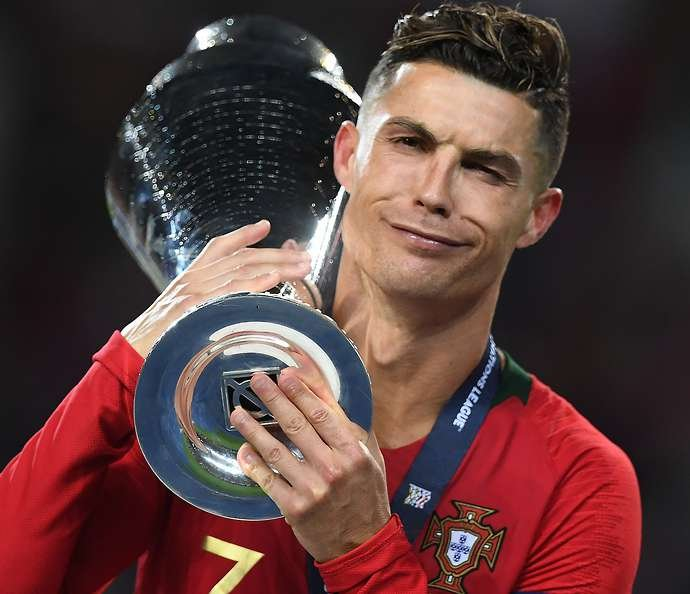
at Real Madrid ended trophyless.
Following Raúl's departure, Ronaldo was handed the number 7 shirt for Real Madrid before the 2010–11 season. His subsequent return to his Ballon d'Or-winning form was epitomised when, for the first time in his career, he scored four goals in a single match during a 6–1 rout against Racing Santander on 23 October.[121] His haul concluded a goalscoring run of six consecutive matches
(three in La Liga, one in the Champions League, and two for Portugal) totalling 11 goals, the most he had scored in a single month. Ronaldo subsequently scored further hat-tricks against Athletic Bilbao, Levante, Villarreal, and Málaga.
Despite his performance, he did not make the podium for the inaugural FIFA Ballon d'Or at the end of 2010.
During a historical series of four Clásicos against rivals Barcelona in April 2011, Ronaldo scored twice to equal his personal record of 42 goals in all
competitions in a single season. Although he failed to find the net during Madrid's eventual elimination in the Champions League semi-finals, he equalised from the penalty spot in the return league game and scored the match-winning goal in the 103rd minute of the Copa del Rey final, winning his first trophy in Spain. His two goals in the last
match of the season, against Almería, made him the first player in La Liga to score 40 goals In addition to the Pichichi Trophy, Ronaldo consequently won the European Golden Shoe for a second time, becoming the first player to win the award in two different leagues
Ronaldo scored 46 league goals during the La Liga championship success in his third season in Spain.
During the following campaign, the 2011–12 season, Ronaldo surpassed his previous goalscoring feats to achieve a new personal best of 60 goals across all competitions.
He regained a place on the FIFA Ballon d'Or podium, as runner-up to Messi, after scoring hat-tricks against Real Zaragoza, Rayo Vallecano, Málaga, Osasuna, and Sevilla, the last of which put Madrid on top of the league by the season's midway point
]
Ronaldo
found greater team success in the league, as he helped Real Madrid win their first La Liga title in four years, with a record 100 points. Following a hat-trick against Levante, further increasing Madrid's lead over Barcelona
he scored his 100th league goal for Madrid in a 5–1 win over Real Sociedad on 24 March 2012, a milestone he reached in just 92 matches across three seasons, breaking the previous club record held by Ferenc Puskás
Another hat-trick in the Madrid derby against Atlético Madrid brought his total
to 40 league goals, equalling his record of the previous season.
His final league goal of the campaign, against Mallorca, took his total to 46 goals, four short of the new record set by Messi and earned him the distinction of being the first player to score against all 19 opposition teams in a single season in La Liga.
Ronaldo began the 2012–13 season by lifting the Supercopa de España, his third trophy in Spain. With a goal in each leg by the Portuguese, Madrid won the Spanish Super Cup on away goals following a 4–4 aggregate draw against Barcelona.
Although Ronaldo publicly commented that he was unhappy with a "professional issue" within the club, prompted by his refusal to celebrate his 150th goal for Madrid,
his goalscoring rate did not suffer. After netting a hat-trick, including two penalties, against Deportivo La Coruña, he
scored his first hat-trick in the Champions League in a 4–1 victory over Ajax.
] Four days later, he became the first player to score in six successive Clásicos when he hit a brace in a 2–2 draw at Camp Nou His performances in
2012 again saw Ronaldo voted second in the running for the FIFA Ballon d'Or, finishing runner-up to four-time winner Messi
Fifa Finals
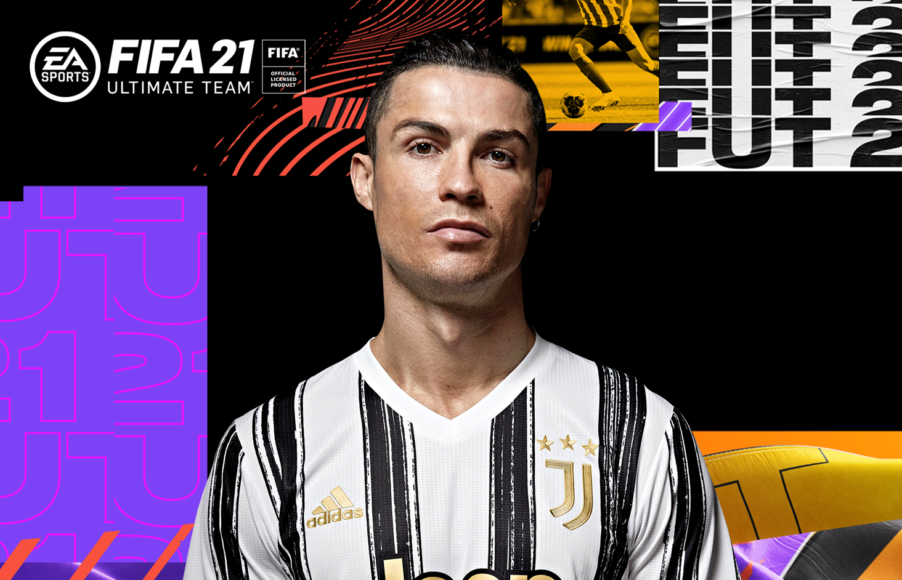
Following the 2012–13 winter break, Ronaldo captained Real Madrid for the first time in an official match, scoring a brace to lift 10-man Madrid to a 4–3 victory over Real Sociedad on 6 January. He subsequently became the first non-Spanish
player in 60 years to captain Madrid in El Clásico on 30 January, a match which also marked his 500th club appearance.
Three days prior, he had scored his 300th club goal as part of a perfect hat-trick against Getafe
He scored his 200th goal for Real Madrid on 8 May in a 6–2 win against Málaga, reaching the landmark in 197 games.
He helped Madrid reach the Copa del Rey final by scoring twice in El Clásico, which marked the sixth successive match at Camp Nou in which he had scored,[148] a Real Madrid record.[139] In the final, he headed the opening goal of an eventual 2–1 defeat to Atlético Madrid, but was shown a red card for violent conduct.[149] In the first knockout round of the Champions League, Ronaldo faced his former club Manchester United for the first time. After scoring the equaliser in a 1–1 draw at the Santiago Bernabéu
he scored the match-winning goal in a 2–1 victory at Old Trafford, his first return to his former home ground
He did not celebrate scoring against his former club as a mark of respect. After scoring three goals against Galatasaray in the quarters, he scored Madrid's only goal in the 4–1 away defeat to Borussia Dortmund in the semi-finals, but failed to increase his side's 2–0 victory in the second leg, as they were eliminated at the semi-final stage for the third consecutive year.
Ronaldo scored a record 17 UEFA Champions League goals during the 2013–14 La Décima season.
At the start of the 2013–14 season,
Ronaldo signed a new contract that extended his stay by three years to 2018, with a salary of €17 million net, making him briefly the highest-paid player in football. He was joined at the club by winger Gareth Bale, whose world record transfer fee
of €100 million surpassed the fee Madrid had paid for Ronaldo four years prior. Together with striker Karim Benzema, they formed an attacking trio popularly dubbed "BBC", an acronym of Bale, Benzema, and Cristiano, and a play off the name of the public service broadcaster.[156] By late November, Ronaldo had scored 32 goals from 22 matches for both club and country, including hat-tricks against Galatasaray, Sevilla, Real Sociedad, Northern Ireland, and Sweden
He ended 2013 with 69 goals in 59 appearances, his highest year-end goal tally.[160] He received the FIFA Ballon d'Or, an amalgamation of the Ballon d'Or and the FIFA World Player of the Year award, for the first time in his career.[161]
Concurrently with his individual achievements, Ronaldo enjoyed his greatest team success in Spain to date,
as he helped Real Madrid win La Décima, their tenth European Cup. His goal in a 3–0 home win over Borussia Dortmund (his 100th Champions League match) took his total for the season to 14 goals, equalling the record Messi had set two years before After hitting a brace in a 4–0 defeat of Bayern Munich at the Allianz Aren
he scored from the penalty spot in the 120th minute of the 4–1 final victory over Atlético Madrid, becoming the first player to score in two European Cup finals for two different winning teams
His overall performance in the final was subdued as a result of patellar tendinitis and related hamstring problems, which had plagued him in the last months of the campaign. Ronaldo played the final against medical advice, later commenting: "In your life you do not win without sacrifices and you must take risks."[165] As the Champions League top goalscorer for the third time, with a record 17 goals, he was named the UEFA Best Player in Europe
In the Copa del Rey, Ronaldo helped Madrid reach the final by scoring two penalties against Atlético Madrid at the Vicente Calderón,[168] the first of which meant he had now scored in every single minute of a 90-minute football match.
His continued issues with his knee and thigh caused him to miss the final, where Real Madrid defeated Barcelona 2–1 to claim the trophy
Ronaldo scored 31 goals in 30 league games, which earned him the Pichichi and the European Golden Shoe, receiving the latter award jointly with Liverpool striker Luis Suárez.
Among his haul was his 400th career goal, in 653 appearances for club and country, which came with a brace against Celta Vigo on 6 January; he dedicated his goals to compatriot Eusébio, who had died two days before.[172] A last-minute, back-heeled volley scored against Valencia on 4 May (his 50th goal in all competitions) was recognised as the best goal of the season by the Liga Nacional de Fútbol Profesional,[173] which additionally named Ronaldo the Best Player in La Liga.
During the next campaign, the 2014–15 season, Ronaldo set a new personal best of 61 goals in all competitions, starting with both goals in Real Madrid's 2–0 victory over Sevilla in the UEFA Super Cup.
He subsequently achieved his best-ever goalscoring start to a league campaign, with a record 15 goals in the first eight rounds of La Liga.
His record 23rd hat-trick in La Liga, scored against Celta Vigo on 6 December, made him the fastest player to reach 200
goals in the Spanish league, as he reached the milestone in only his 178th game. ] After lifting the FIFA Club World Cup with Madrid in Morocco, and becoming the joint-top assist provider of the competition alongside Toni Kroos,[178] Ronaldo received a second successive FIFA Ballon d'Or,[179] joining Johan Cruyff, Michel Platini, and Marco van Basten as a three-time Ballon d'Or winner.
 Madrid finished in second-place in La Liga in the 2014–15 season and exited at the semi-final stage in the Champions League.[181] In the latter competition, Ronaldo extended his run of scoring away to a record 12 matches with his strike in a 2–0 win against Schalke 04.[
Madrid finished in second-place in La Liga in the 2014–15 season and exited at the semi-final stage in the Champions League.[181] In the latter competition, Ronaldo extended his run of scoring away to a record 12 matches with his strike in a 2–0 win against Schalke 04.[
He scored both of his side's goals in the semi-finals against Juventus, where Madrid were eliminated 2–3 on aggregate.
With 10 goals, he finished the campaign as top scorer for a third consecutive season, alongside Messi and Neymar
In La Liga, for the first time in his career he scored five goals in one game, including an eight-minute hat-trick, in a 9–1 rout of Granada on 5 April.
His 300th goal for his club followed three days later in a 2–0 win against Rayo Vallecano.[186] Subsequent hat-tricks against Sevilla, Espanyol, and Getafe took his number of hat-tricks for Real Madrid to 31, surpassing Di Stéfano's club record of 28.
He finished the season with 48 goals, winning a second consecutive Pichichi and the European Golden Shoe for a record fourth time.
At the start of his seventh season at Real Madrid, the 2015–16 campaign, Ronaldo became the club's all-time top scorer, first in the league and then in all competitions. His five-goal haul in a 6–0 away win over Espanyol on 12 September took his tally in La Liga to 230 goals in 203 games, surpassing the club's previous recordholder, Raúl
A month later, on 17 October, he again surpassed Raúl when he scored the second goal in a 3–0 defeat of Levante at the Bernabéu to take his overall total for the club to 324 goals.[note 4] Ronaldo also became the all-time top scorer in the Champions League with a hat-trick in the first group match against Shakhtar Donetsk, having
finished the previous season level with Messi on 77 goals.[189] Two goals against Malmö FF in a 2–0 away win on 30 September saw him reach the milestone of 500 career goals for both club and country
He subsequently became the first player to score double figures in the competition's group stage, setting the record at 11 goals, including another four-goal haul against Malmö
By March 2016, Ronaldo had scored 252 goals in 228 matches in La Liga to become the competition's second-highest goalscorer.
Ronaldo's four goals in a 7–1 home win over Celta de Vigo on 5 March 2016 took his total to 252 goals in La Liga, becoming the competition's second-highest scorer in history behind Messi
He scored a hat-trick against VfL Wolfsburg to send his club into the Champions League semi-finals.
The treble took his tally in the competition to 16 goals, making him the top scorer for the fourth consecutive season, and the fifth overall Suffering apparent fitness issues, Ronaldo gave a poorly-received performance in the final against Atlético Madrid, in a repeat of the 2014 final, though his penalty in the subsequent shoot-out secured La Undécima, Madrid's 11th victory. For the sixth successive year, he ended the season having scored over 50 goals across all competitions. For his efforts during the season, he received the UEFA Best Player in Europe Award for a second time.
Ronaldo missed Real Madrid's first three matches of the 2016–17
season, including the 2016 UEFA Super Cup against Sevilla, as he continued to rehabilitate the knee injury he suffered against France in the final of Euro 2016
n 15 September, he did not celebrate his late free kick equaliser against Sporting CP in the Champions League, with Ronaldo stating post match that "they made me who I am." On 7 November, his contract was updated for the second time and extended by three years to 2021.[ On 19 November, he scored a hat-trick in a 3–0 away win against Atlético Madrid, making him the all-time top scorer in the Madrid derby with 18 goals
] On 15 December, Ronaldo scored his 500th club career goal in the 2–0 victory over Club América in the semi-finals of the FIFA Club World Cup He then scored a hat-trick in the 4–2 win over Japanese club Kashima Antlers in the final. Ronaldo finished the tournament as top scorer with four goals and was also named player of the tournament.
He won the Ballon d'Or for a fourth time and the inaugural Best FIFA Men's Player, a revival of the former FIFA World Player of the Year, largely owing to his success with Portugal in winning Euro 2016.
Fifth Champions League Title
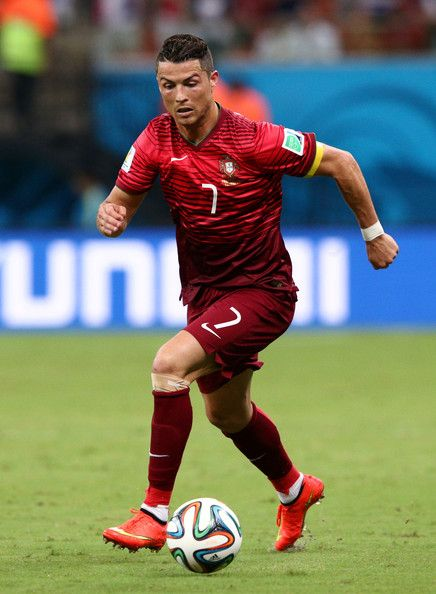
In the 2016–17 UEFA Champions League quarter-final against Bayern Munich in April, Ronaldo scored both goals in a 2–1 away win which saw him make history in becoming the first player to reach 100 goals in UEFA club competition.[205] In the second leg of the quarter-finals, Ronaldo scored a 'perfect' hat-trick and reached his 100th UEFA Champions League goal, becoming the first player to do so as Real Madrid again defeated Bayern 4–2 after extra-time.[206] On 2 May, Ronaldo scored another hat-trick as Real Madrid defeated Atlético Madrid 3–0 in the Champions League semi-final first leg. On 17 May, Ronaldo overtook Jimmy Greaves as the all-time top scorer in the top five European leagues, scoring twice against Celta de Vigo.[207] He finished the season with 42 goals in all competitions as he helped Madrid to win their first La Liga title since 2012.[208] In the 2017 Champions League final, Ronaldo scored two goals in the victory against Juventus and became the top goalscorer for the fifth-straight season, and sixth
overall, with 12 goals, while also becoming the first player to score in three finals in the Champions League era as well as reaching his 600th senior career goal.[209] Madrid also became the first team to win back-to-back finals in the Champions League era.[210]
Ronaldo in the 2018 UEFA Champions League Final, his final game for Real Madrid
At the start of the 2017–18 season, Ronaldo scored Madrid's second goal in a 3–1 Supercopa de España first-leg victory over Barcelona at Camp Nou.
On 23 October, his performances in the first half of 2017 saw him claim his fifth FIFA Player of the Year award by receiving The Best FIFA Men's Player award for the second consecutive year.
On 6 December, he became the first player to score in all six Champions League group stage matches with a curling strike at home to Borussia Dortmund.[213] A day later, Ronaldo won the Ballon d'Or for a fifth time, receiving the award on the Eiffel Tower in Paris.
] On 16 December he scored a free kick winner as Madrid won their second FIFA Club World Cup title in a row by beating Gremio in the final
On 3 March 2018, he scored two goals in a 3–1 home win over Getafe, his first being his 300th La Liga goal in his 286th La
Liga appearance, making him the fastest player to reach this landmark and only the second player to do so after Messi.[
On 18 March, he reached his 50th career hat-trick, scoring four goals in a 6–3 win against Girona.
On 3 April, Ronaldo scored the first two goals in a 3–0 away win against Juventus in the quarter-finals of the 2017–18 UEFA Champions League, with his second goal being an acrobatic bicycle kick. Described as a "PlayStation goal" by Juventus defender Andrea Barzagli, with Ronaldo's foot approximately 7 ft 7 in (2.31 m) off the ground, it garnered him a standing ovation from the opposing fans in the stadium, as well as a plethora of plaudits from peers, pundits and coaches.[218] On 11 April, he scored the goal Real Madrid needed to advance to the semi-final, in the second leg of the Champions League quarter-final at home to Juventus, from a 98th-minute injury time penalty in a 3–1 defeat, with an overall 4–3 aggregate win. It was also his tenth goal against Juventus, a Champions League record against a single club.[220] In the final of the tournament, on 26 May, Real Madrid defeated Liverpool 3–1, winning Ronaldo his fifth Champions League title as he became the first player to win the trophy five times.[
He finished as the top scorer of the tournament for the sixth consecutive season, ending the campaign with 15 goals.
After the final, Ronaldo referred to his time with the Champions League winners in the past tense, sparking speculation that he could leave Real Madrid
Juventus
2018–2019: Adjustment and first Serie A title
Despite months of negotiation to sign a new Real Madrid contract
on 10 July 2018, Ronaldo signed a four-year contract with Italian club Juventus after
completing a €100 million transfer, which included an additional €12 million in other fees,[225] and solidarity contributions to Ronaldo's youth clubs.
The transfer was the highest ever for a player over 30 years old,
and the highest paid by an Italian club.[227] Upon signing, Ronaldo cited his need for a new challenge as his rationale for departing Madrid,
] but later attributed the transfer to the lack of support he felt was shown by club president Florentino Pérez.[229]
On 16 September, Ronaldo scored his first goals for Juventus in his fourth appearance for the club in a 2–1
home win over Sassuolo in Serie A. His second was the 400th league goal of his career.
On 19 September, in his first Champions League match for Juventus, he was sent off in the 29th minute for "violent conduct",
his first red card in 154 Champions League appearances.[231] Ronaldo became the first player in history to win 100 Champions League matches, setting up Mario Mandžukić's winner in a 1–0 home victory over Valencia, which sealed Juventus's passage
to the knock-out stages of the competition.[232] In December, he scored his tenth Serie A goal of the season, from the penalty spot, netting the final goal in a
3–0 away win over rivals Fiorentina; with this goal, Ronaldo became the first Juventus player since John Charles in 1957
to score 10 goals in his first 14 league games for the club.[233] After placing second in both the UEFA Men's Player of the Year and The Best FIFA Men's Player for the first time in three years, behind Luka Modrić, Ronaldo performances in 2018 also saw him voted runner-up for the 2018 Ballon d'Or, finishing once again behind his former Real Madrid teammate.
Ronaldo won his first trophy with the club in January 2019, the 2018 Supercoppa Italiana, after he scored the game-winning and only goal from a header against A.C. Milan.
On 10 February, Ronaldo scored in a 3–0 away win over Sassuolo; the ninth consecutive away game in which he had scored for Juventus in the league, which enabled him to equal
Giuseppe Signori's single season Serie A record of most consecutive away games with at least one goal.[236] On 12 March, Ronaldo scored a hat-trick in a 3–0 home win against Atlético Madrid in the second leg of the Champions League round
of 16, helping Juventus overcome a two-goal deficit to reach the quarter-finals.[ The following month, Ronaldo scored his 125th goal in the competition, opening the scoring in a 1–1 away draw in the first leg of Juventus' quarter-final against Ajax, on 10 April
In the second leg in Turin on 16 April, he scored the opening goal of the match in the first half, but Juventus eventually lost the match 2–1, and were eliminated
from the competition
On 20 April, Ronaldo played in the Scudetto clinching game against rivals Fiorentina as Juventus won their eighth successive
Serie A title after a 2–1 home win, thereby becoming the first player to win league titles in England, Spain and Italy.[
On 27 April, he scored his 600th club goal, the equaliser in a 1–1 away draw against rivals Inter. Finishing his first Serie A campaign with 21 goals and 8 assists, Ronaldo won the inaugural Serie A Award for Most Valuable Player
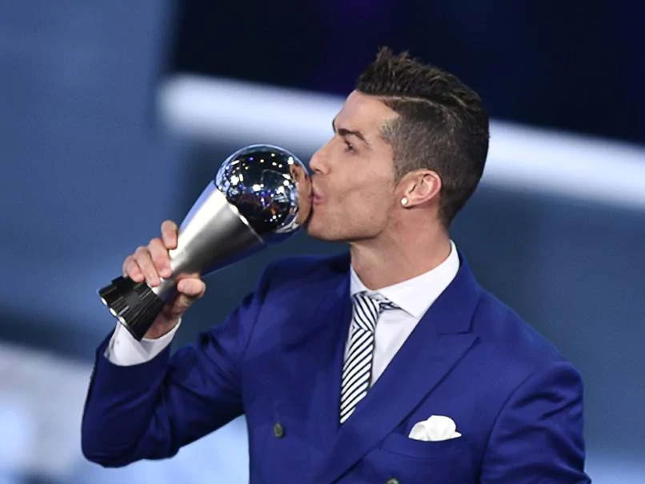
Ronaldo scored his first goal of the 2019–20 season for Juventus in a 4–3 home win over Napoli in Serie A on 31 August 2019.
On 23 September, he came in 3rd place for the 2019 Best FIFA Men's Player Award
On 1 October, he reached several milestones in Juventus's 3–0 group stage win over Bayer Leverkusen in the Champions League: his goal during the match saw him score for the 14th consecutive Champions League season, equalling Raúl and Messi's record; he also broke Iker Casillas' record for most Champions League wins of all time, and equalled Raúl's record of scoring against 33 different Champions League opponents
On 6 November, in a 2–1 away win against Lokomotiv Moscow in the Champions League group stage, he equalled Paolo Maldini as the second-most capped player in UEFA club competitions with 174 appearances.[
On 18 December, Ronaldo performed an athletic feet, in leaping to a height of 8.39 ft (2.56m) – higher than the crossbar (8 ft) – before heading the winning goal in a 2–1 away win for Juventus against Sampdoria in Serie A.
Ronaldo scored his first Serie A hat-trick on 6 January 2020, in a 4–0 home win against Cagliari. His 56th career hat-trick, he became only the second player after Alexis Sánchez to score hat-tricks in the Premier League, La Liga and Serie A.
On 2 February, he scored twice from the penalty spot in a 3–0 home win over Fiorentina, equalling David Trezeguet's club record of nine consecutive appearances in Serie A with at least one goal.
He broke the club record six days later, when he scored in his tenth consecutive league game, a 2–1 away defeat to Hellas Veron
On 22 February, Ronaldo scored for a record-equalling 11th consecutive Serie A game (a record shared with Gabriel Batistuta and Fabio Quagliarella), in what was his 1,000th senior professional game, in a 2–1 away win for Juventus against SPAL.
On 22 June, he scored a penalty in a 2–0 away win over Bologna, overtaking Rui Costa to become the highest scoring Portuguese player in Serie A history. On 4 July, he assisted Juan Cuadrado's goal and later scored his 25th league goal of the season from a free kick in a 4–1
home win over rivals Torino, becoming the first Juventus player to achieve this milestone since Omar Sívori in 1961; the goal was also his first from a free kick with the club, after 43 attempts.
On 20 July, Ronaldo scored twice in a 2–1 home win over Lazio; his first goal was his 50th in Serie A. He became the second fastest player to reach this landmark, after Gunnar Nordahl, and the first player in history to reach 50 goals in the Premier League, La Liga, and Serie A. With his brace, he also reached 30 league goals for the season, becoming just the third player in Juventus's history to reach that milestone in a single season,
] after Felice Borel in 1933–34 and John Hansen in 1951–52. Moreover, he became the oldest player, at the age of 35 years and 166 days, to score over 30 goals in one of the five top European leagues since Ronnie Rooke with Arsenal in 1948 On 26 July, he scored the opening goal in a 2–0 home win over Sampdoria, which saw Juventus crowned Serie A champions for a ninth consecutive time
He finished his second Serie A campaign with a total of 31 goals and 6 assists, which made him the second–highest goalscorer in the league behind only European Golden Shoe winner Ciro Immob
ile,
with 36 goals, who also equalled Gonzalo Higuaín's record for most goals in a single Serie A season.
On 7 August, Ronaldo scored a brace in a 2–1 home win against Lyon in the second leg of the Champions League round of 16, which saw him finish the season with 37 goals in all competitions; the tally allowed him to break Felice Borel's club record of 36 goals in a single season, which he had set in 1933–34.[260] However, despite the victory, Juventus tied with Lyon 2–2 on aggregate, and were eliminated from the competition on the away goals rule
International Career
Assuming The Captaincy
Ronaldo began his international career with Portugal under-15 in 2001. During his international youth career, Ronaldo would represent the under-15, under-17, under-20, under-21, and under-23 national sides, amassing 34 youth caps and scoring 18 goals overall.
At age 18, Ronaldo made his first senior appearance for Portugal in a 1–0 victory
over Kazakhstan on 20 August 2003, coming on as a half-time subtitute for Luís Figo He was subsequently called up for UEFA Euro 2004, held in his home country, and scored his first international goal in a 2–1 group stage loss to eventual champions Greece, his eighth appearance for Portugal.
ter converting his penalty in a shoot-out against England in the quarter-finals,[274] he helped Portugal reach the final by scoring the opening goal in a 2–1 win over the Netherlands.
He was featured in the team of the tournament, having provided two assists in addition to his two goals.[276]
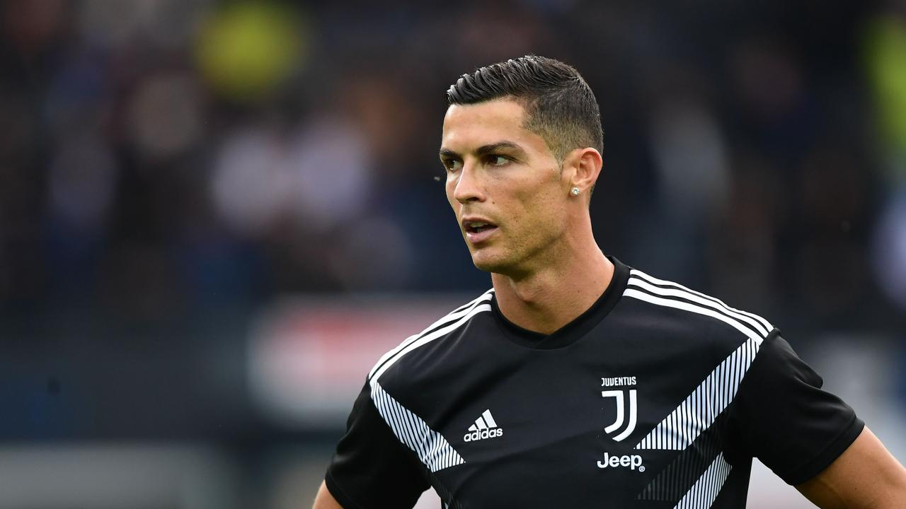
Ronaldo was Portugal's second-highest scorer in their qualification group for the 2006 FIFA World Cup with seven goals
During the tournament, he scored his first World Cup goal against Iran with a penalty kick in
Portugal's second match of the group stage.
aged 21 years and 132 days, Ronaldo became the youngest ever goalscorer for Portugal at a World Cup finals.[278] In Portugal's round of 16 match against the Netherlands, an infamously dirty game, Ronaldo was forced off injured in the first half after a tackle from Dutch defender Khalid Boulahrou
Following Portugal's 1–0 victory in the match, Ronaldo accused Boulahrouz of intentionally trying to injure him, although he was able to recover in time to participate in the next round.[279] In Portugal's quarter-final against England, Ronaldo's Manchester United teammate Wayne Rooney was sent off for stamping on Portugal defender Ricardo Carvalho. Although the referee later clarified that the red card was only due to Rooney's infraction,[280] the English
media speculated that Ronaldo had influenced his decision by aggressively complaining, after which he was seen in replays winking at Portugal's bench following Rooney's dismissal.
Ronaldo went on to score the vital winning penalty during the shoot-out which sent Portugal into the semi-finals.[273] Ronaldo was subsequently booed during their 1–0 semi-final defeat to France.
FIFA's Technical Study Group overlooked him for the tournament's Best Young Player award and handed it to Germany's Lukas Podolski, citing his behaviour as a factor in the decision.
Following the 2006 World Cup, Ronaldo would go on to represent Portugal in four qualifying games for Euro 2008, scoring two goals in the process.[284][285]
2007–2012: Assuming the captaincy
Ronaldo, pictured playing against Germany at Euro 2012, was made captain for Portugal in 2008.
One day after his 22nd birthday, Ronaldo captained Portugal for the first time in a friendly game against Brazil on 6 February 2007,
as requested by Portuguese Football Federation president Carlos Silva, who had died two days earlier.
Ahead of Euro 2008, he was given the number 7 shirt for the first time.[288] While he scored eight goals in the qualification, the second-highest tally, he scored just one goal in the tournament, netting the second goal of their 3–1 win in the group stage match against the Czech Republic; in the same game, he also set-up Portugal's third
goal in injury time, which was scored by Quaresma, and was named man of the match for his performance.[290][291] Portugal were eliminated in the quarter-finals with a 3–2 loss against eventual finalists Germany.
After Portugal's unsuccessful performance in the European Championship, Luiz Felipe Scolari was replaced as coach by Carlos Queiroz, formerly the assistant manager at United.[293] Queiroz made Ronaldo the squad's permanent captain in July 2008.[
] Ronaldo failed to score a single goal in the qualification for the 2010 World Cup,[273] as Portugal narrowly avoided a premature elimination from the tournament with a play-off victory over Bosnia and Herzegovina In the group stage of the World Cup, he was named man of the match in all three matches
against Ivory Coast, North Korea, and Brazil.[296][297][298] His only goal of the tournament came in their 7–0 rout of North Korea, which marked his first international goal in 16 months.[299] Portugal's World Cup ended with a 1–0 loss against eventual champions Spain in the round of 16.
Ronaldo scored seven goals in the qualification for Euro 2012, including two strikes
against Bosnia and Herzegovina in the play-offs, to send Portugal into the tournament, where they were drawn in a "group of death
] In the last group stage game against the Netherlands, Ronaldo scored twice to secure a 2–1 victory.[302] He scored a header in the quarter-final against the Czech Republic to give his team a 1–0 win
In both games against the Netherlands and the Czech Republic he was named man of the match.
After the semi-finals against Spain ended scoreless, with Ronaldo having sent three shots over the bar,[306] Portugal were eliminated in the penalty shoot-out. Ronaldo did not take a penalty as he had been slated to take the unused fifth slot,[307] a decision that was questioned by the media.[308][309][310] Ronaldo's own teammate, Nani, said that Ronaldo "demanded" to take the last penalty.[311] As the joint top scorer with three goals, alongside five other players, he was again included in the team of the tournament
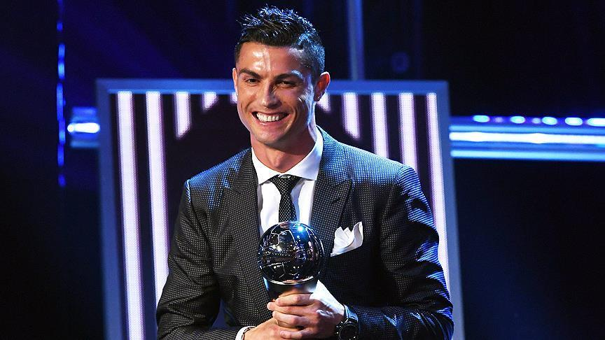
During the qualification for the 2014 World Cup, Ronaldo scored a total of eight goals. A qualifying match on 17 October 2012, a 1–1 draw against Northern Ireland, earned him his 100th cap.
His first international hat-trick also came against Northern Ireland, when he found the net three times in a 15-minute spell of a 4–2 qualifying victory on 6 September 2013.
After Portugal failed to qualify during the regular campaign, Ronaldo scored all four of the team's goals in the play-offs against Sweden – billed as a battle between Ronaldo and Zlatan Ibrahimović – which ensured their place at the tournament ] His hat-trick in the second leg took his international tally to 47 goals, equaling Pauleta's record.[316] Ronaldo subsequently scored twice in a 5–1 friendly win over Cameroon on 5 March 2014 to become his country's all-time top scorer.[
Ronaldo took part in the tournament despite suffering from patellar tendinitis and a related thigh injury
potentially risking his career.[320] Ronaldo later commented: "If we had two or three Cristiano Ronaldos in the team I would feel more comfortable. But we don't."
Despite ongoing doubts over his fitness, being forced to abort practice twice, Ronaldo played the full 90 minutes of the opening
match against Germany, though he was unable to prevent a 4–0 defeat.[323] After assisting an injury-time 2–2 equaliser against the United States e scored a late match-winning goal in a 2–1 victory over Ghana. His 50th international goal made him the first
Portuguese to play and score in three World Cups.
Portugal were eliminated from
the tournament at the close of the group stage on goal difference
Ronaldo leaps in the air in Portugal's Euro 2016 quarter-final match against Poland
Ronaldo scored five goals, including a hat-trick against Armenia, in the qualification for Euro 2016. With the only goal in another victory over Armenia on 14 November 2014, he reached 23 goals in the European Championship, including
qualifying matches, to become the competition's all-time leading goalscorer.[328] At the start of the tournament, however, Ronaldo failed to
convert his chances in Portugal's draws against Iceland and Austria, despite taking a total of 20 shots on goal. In the latter match, he overtook Luís Figo as his nation's most capped player with his 128th international appearance, which ended scoreless after he missed a
penalty in the second half With two goals and an assist in the last match of the group stage, a
3–3 draw against Hungary, Ronaldo became the first player to score in four European Championships, having made a record 17 appearances in the tournament.
Though placed third in their group behind Hungary and Iceland, his team qualified for the knockout round as a result of the competition's newly expanded format
despite not winning any of their games
In Portugal's first knockout match, Ronaldo's only attempt on goal was parried by Croatia's goalkeeper
Danijel Subašić into the path of Ricardo Quaresma, whose finish then secured a 1–0 victory late in extra time.
After his team progressed past Poland on penalties, with Ronaldo scoring Portugal's opening penalty
he became the first player to participate in three European Championship semi-final e scored the opening goal and assisted a second in a 2–0 win against Wales, equalling Michel Platini as the competition's all-time top scorer with nine goals In the final against hosts France, Ronaldo was forced off after just 25 minutes following
a challenge from Dimitri Payet, despite multiple treatments and attempts to play on
he was stretchered off the pitch and replaced by Quaresma. During extra time, substitute Eder scored in the 109th minute to earn Portugal a 1–0 victory
As team captain, Ronaldo later lifted the trophy in celebration of his country's first triumph in a major tournament.
He was awarded the Silver Boot as the joint second-highest goalscorer, with three goals and three assists, and was named to the team of the tournament for the third time in his career.
World Cup
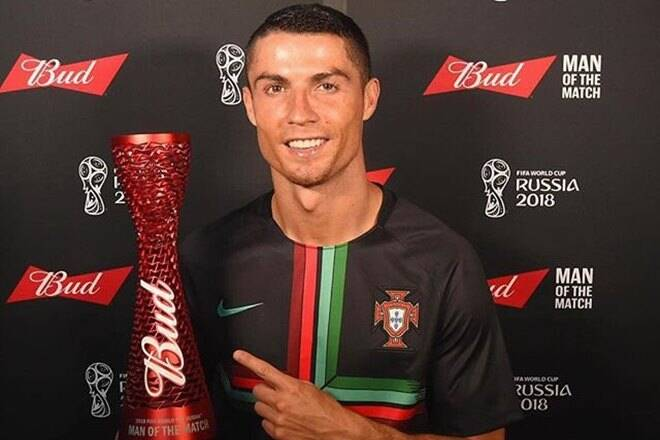
Following the Euro 2016 success, Ronaldo played his first professional match on his home island of Madeira on 28 March 2017 at age 32, opening a 2–3 friendly defeat to Sweden at the Estádio dos Barreiros. With the goal, he tied with Miroslav Klose on 71 goals as the third-highest scoring European
in international football.[338]
In Portugal's opening match of the 2017 FIFA Confederations Cup against Mexico on 17 June, Cristiano Ronaldo set-up Quaresma's opening goal in a 2–2 draw.[339] Three days later, he scored in a 1–0 win over hosts Russia.[
On 24 June, he scored from a penalty in a 4–0 win over New Zealand,
which saw Portugal top their group and advance to the semi-finals of the competition. With his 75th international goal, Ronaldo
also equalled Sándor Kocsis as the second-highest European international goalscorer of all-time, behind only Ferenc Puskás.
He was named man of the match in all three of Portugal's group stage matches Ronaldo left the competition early: after Chile defeated Portugal 3–0 on penalties in the semi-finals, he was allowed to return home to be with his newborn children.[344] Therefore, he missed Portugal's third-place play-off match in which Portugal defeated Mexico 2–1 after extra time.[345]
Ronaldo evades an Iran defender in the group stage of the 2018 FIFA World Cup
On 31 August 2017,
Ronaldo scored a hat-trick in a 5–1 win in a World Cup qualifier over the Faroe Islands, which saw him overtake Pelé and equal Hussein Saeed as the joint-fifth-highest goalscorer in international football with 78 goals.
These goals brought his tally in the 2018 World Cup
qualifiers to 14, equalling Predrag Mijatović's record for most goals in a single UEFA senior men's qualifying campaign, and also saw him break the record for the most goals scored in a single European qualifying group, overtaking the previous record of
13 goals set by David Healy and Robert Lewandowski. Ronaldo's hat-trick took his World Cup qualifying
goals total to 29, making him the highest scorer in European World Cup qualifiers, ahead of Andriy Shevchenko, and the highest goalscorer in World Cup qualifying and finals matches combined, with 32 goals, ahead of Miroslav Klose.[347] Ronaldo later added to this tally by scoring a goal against Andorra in a 2–0 victory.
On 15 June 2018, Ronaldo became the oldest player
to score a hat-trick in a World Cup match, helping Portugal secure a 3–3 draw against Spain (his third goal a 30-yard curling free kick with two minutes remaining) in their opening match. In
doing so, he also became the first Portuguese
player to score a goal in four World Cups and one of four players to do so in total.[349] On 20 June, Ronaldo scored the only
goal in a 1–0 victory against Morocco, breaking Ferenc Puskás' record as the highest European goalscorer of all-time, with 85 international goals.[
n the final group match against Iran on 25 June, Ronaldo missed a penalty in an eventual
1–1 draw which saw Portugal progress to the second round as group runners-up behind Spain.[351] On 30 June, Portugal were eliminated following a 2–1 defeat to Uruguay in the last 1
For his performances in the tournament, Ronaldo was later named to the 2018 FIFA World Cup Dream Team.[353]
2018–2020: Nations League title and 100 international goals
After the 2018 FIFA World Cup, Ronaldo missed six international matches,
including the entire league phase of the 2018–19 UEFA Nations League. Ronaldo played for hosts Portugal in the inaugural Nations League Finals in June 2019. In the semi-finals on 5 June, he scored a hat-trick against Switzerland to secure a spot in the final. Upon netting the match's opening goal, he became the first player to score in 10 consecutive international competitions, breaking the record of nine he previously shared with Ghana's Asamoah Gyan.[354] In the final of the tournament four days later, Portugal
defeated Netherlands 1–0.
On 10 September 2019, Ronaldo scored four goals in a 5–1 away win over Lithuania in a Euro 2020 qualifying match;[356] in the process, he overtook Robbie Keane (23 goals) as the player with most goals in the UEFA European Championship qualifiers, setting a new record with 25 goals ] On that occasion, Ronaldo also set a new record as the player who scored against the most national teams, 40
hile also completing his eighth international hat-trick.[359] On 14 October, he scored his 700th senior career goal for club and country from the penalty spot, in his 974th senior career appearance,
a 2–1 away loss to Ukraine in a Euro 2020 qualifier.[360] On 17
November, Ronaldo scored his 99th international goal in a 2–0 win over Luxembourg, leading Portugal to qualify for Euro 2020.[361] On 8 September 2020, Ronaldo scored his 100th and 101st international goals in a 2–0 away win over Sweden in a 2020–21 UEFA Nations League match, becoming only the second male player ever (after Ali Daei of Iran), and the first in Europe, to achieve this milestone.
n 13 October, the Portuguese Football Federation announced that Ronaldo tested positive for COVID-19 while being asymptomatic.[364] By 30 October, Ronaldo had recovered.
2021–present: European Championship and all-time international top goalscorer
On 15 June 2021, Ronaldo scored twice in Portugal's first game of UEFA Euro 2020
, a 3–0 win against Hungary in Budapest.[366] This took him to a total of eleven European Championship goals, two clear of Michel Platini,
as the all-time top goalscorer in the competition's history. ] He also became the first player to score at five European Championships,[368] and in eleven consecutive tournaments.
The brace made Ronaldo the oldest player to score two goals in a match in the European Championship,[369] and the oldest player to score for Portugal at a major tournamen
] On 23 June, he scored two penalties in Portugal's 2–2 draw with France in their final group stage match, equalling Daei's record of 109 international goals.[371] Furthermore, he became the top scorer in tournament finals for World Cups and European Championships combined, his 21 goals breaking the previous record of Miroslav Klose.[372] On 27 June, Portugal were eliminated from the competition following a 1–0 loss against Belgium in the round of 16.
Ronaldo finished the tournament with five goals (tied with Czech Patrik Schick) and one assist, earning him both the Golden Boot and the Alipay Top Scorer Trophy.
Comparison To Leonel Messi
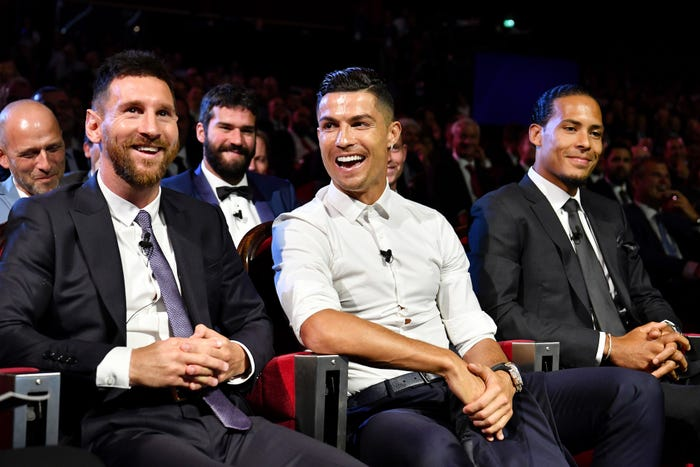Both players have scored in at least two UEFA Champions League finals and have regularly broken the 50-goal barrier in a single season. Sports journalists and pundits regularly weigh the individual merits of both players in an attempt to argue who they believe is the best player in modern football or in the history of the game.
It has been compared to sports rivalries such as the Muhammad Ali–Joe Frazier rivalry in boxing, the Borg–McEnroe rivalry in tennis,
and the Senna–Prost rivalry from Formula One motor racing.[432][433] Some commentators choose to analyse the differing physiques and playing styles of the two,[434] Part of the debate revolves around the contrasting personalities of the two players,
as Ronaldo is sometimes depicted as an arrogant and theatrical showoff, while Messi is portrayed as a shy, humble character.
"It's part of my life now. People are bound to compare us. He tries to do his best for his club and for his national team, as I do, and there is a degree of rivalry with both of us trying to do the best for the teams we represent."
—Ronaldo commenting on his rivalry with Messi.
In a 2012 interview, Ronaldo commented on the rivalry, saying: "I think we push each other sometimes in the competition, this is why the competition is so high."[439] Alex Ferguson, Ronaldo's manager during his time at Manchester United, opined: "I don't think the rivalry against each other bothers them. I think they have their own
personal pride in terms of wanting to be the best."[440] Messi himself denied any rivalry, saying that it was "only the media, the press, who wants
us to be at loggerheads but I've never fought with Cristiano."[441] Responding to the claims that he and Messi do not get on well on a personal level, Ronaldo commented: "We don't have a relationship outside the world of football
, just as we don't with a lot of other players." Ronaldo added that in years to come he hopes they can laugh about it together, stating: "We have
to look on this rivalry with a positive spirit, because it's a good thing." Representing archrivals Barcelona and Real Madrid, the two players faced e
ach other at least twice every season in the world's biggest club game,
El Clásico, which is among the world's most viewed annual sporting events.[442]
In a debate at Oxford Union in October 2013, when asked whether FIFA president Sepp Blatter preferred Messi or Ronaldo, Blatter paid tribute to the work ethic of the Argentine before taking a swipe at Ronaldo, claiming "one of them has more expenses for the hairdresser than the other." Real Madrid demanded – and promptly received
– a full apology, and the Portuguese issued his own riposte with a mock-salute celebration after scoring a penalty against Sevilla, after Blatter
had described him as a "commander" on the pitch.[443] In August 2019, Ronaldo and Messi were interviewed while sat next to each other prior to the announcement of the UEFA Men's Player of the Year, with Ronaldo stating: "Of course,
we have a good relationship. We haven't had dinner together yet, but I hope in the future. I pushed him and he pushed me as well. So it's good
to be part of the history of football.
Outside Football
As his reputation grew from his time at Manchester United, Ronaldo has signed many sponsorship deals for consumer products, including sportswear, football boots—since November 2012 Ronaldo has worn the Nike Mercurial Vapor personalized CR7 edition,
soft drinks, clothing, automotive lubricants, financial services, electronics, and computer video games.[446][447][448][449] Ronaldo was featured as the cover athlete of EA Sports' FIFA video game FIFA 18 and was heavily
involved in the game's promotion.[450] His 'Siiii' goal celebration features in the FIFA series, accompanied with his own voiceover.
] He was also the face of Pro Evolution Soccer, appearing on the cover in 2008, 2012, and 2013
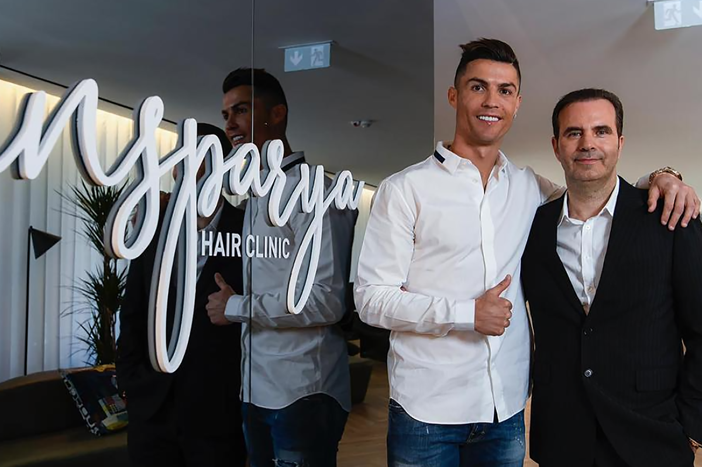
With earnings of €720 million (£615 million) from 2010 to 2019,
Ronaldo was ranked second in Forbes list of The Highest-Paid Athletes Of The Decade, with only boxer Floyd Mayweather, Jr. earning mor
Forbes has twice ranked Ronaldo first on its list of the world's highest-paid football players; his combined income from salaries, bonuses, and endorsements was $73 million in 2013–14 and $79 million in 2014–15.[453][454] The latter earnings saw him listed behind only Mayweather on the magazine's list of The World's Highest-Paid Athletes.[455] In 2016, he became the first footballer to top the Forbes list of highest-earning athletes, with a total income of $88 million from his salary and endorsements in 2015–16.
] He topped the list for the second straight year with earnings of $93 million in 2016–17.[
He is the first footballer, as well as only the third sportsman, to earn $1 billion in their career.[ ] Ronaldo is one of the world's most marketable athletes: SportsPro rated him the fifth most marketable athlete in 2012
and eighth most marketable athlete in 2013,
with Brazilian footballer Neymar topping both lists.[459][460] Sports market research company Repucom named Ronaldo the most marketable and most recognised football player in the world in May 2014.
He was additionally named in the 2014 Time 100, Time's annual list of the most influential people in the world.[462] ESPN named Ronaldo the world's most famous athlete in 2016, 2017, 2018, and 2019
Statue of Ronaldo, in Madeira, resembles the pose he strikes before taking free kicks
Ronaldo has established a strong
online presence. The most popular sportsperson on social media, he counted over 500 million total followers across Facebook, Twitter, and Instagram by February 2021, making him the first person to pass half a billion followers.
The most-followed person on Facebook (148 million), the most-followed on Instagram (310 million), and the most-followed sportsperson on Twitter (92 million), his sponsors earned $936 million in media value across his social media
accounts between June 2016 to June 2017.[457] Ronaldo has released two mobile apps: in December 2011,
he launched an iPhone game called Heads Up with Cristiano, created by developer RockLive,
and in December 2013, he launched Viva Ronaldo, a dedicated social networking website and mobile app Computer security company McAfee produced a 2012 report ranking footballers by the probability of an internet search for their name leading to an unsafe website, with Ronaldo's name first on the list.
Ronaldo's life and person
have been the subject of several works. His autobiography, titled Moments, was published in December 2007
His sponsor Castrol produced the television film Ronaldo: Tested to the Limit, in which he is physically and mentally tested in several areas; his physical performance was consequently subject to scrutiny by world media upon the film's release in September 2011.[473] Cristiano Ronaldo: The World at His Feet, a documentary narrated by the actor Benedict
Cumberbatch, was released via Vimeo in June 2014.[474] A documentary film about his life and career,
titled Ronaldo, was released worldwide on 9 November 2015.[475] Directed by BAFTA-winner
Anthony Wonke, the film is produced and distributed by Universal Pictures, while Asif Kapadia is the executive producer. ]
Portugal Prime Minister António Costa
presents Indian Prime Minister Narendra Modi a signed Ronaldo jersey in January 2017
Demand for a replica Ronaldo jersey has
been high throughout his career. In 2008, Ronaldo's number 7 Manchester United jersey was the best-selling sports product under the auspices of the Premier League.[
n 2015, Ronaldo's number 7 Real Madrid jersey was the second best-selling jersey worldwide, after Messi's
number 10 Barcelona jerse In 2018, within 24 hours of his number 7 Juventus jersey being released, over 520,000 had been sold, with $62.4 million generated in one day.
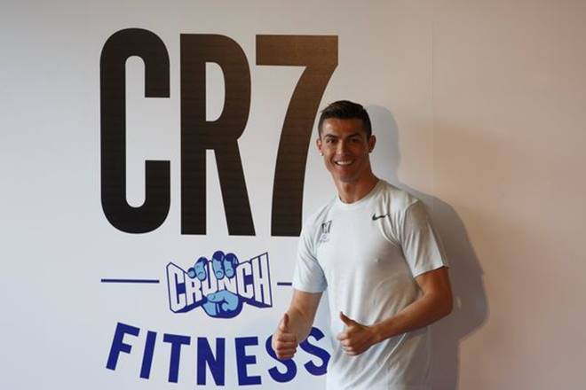
Ronaldo opened his first fashion boutique under the name
CR7 (his initials and shirt number) on the island of Madeira, Portugal, in
2006. Ronaldo expanded his business with a second clothes boutique in Lisbon in 2008.
In partnership with Scandinavian manufacturer JBS Textile Group and the New York fashion designer Richard Chai, Ronaldo co-designed a range of underwear and sock line, released in November 2013.[481] He later expanded his CR7 fashion brand by launching a line of premium shirts
and shoes by July 2014.[483] In September 2015, Ronaldo released his own fragrance, "Legacy",
in a partnership with Eden Parfums.
In 2007, C.D. Nacional renamed its youth campus
Cristiano Ronaldo Campus Futebol (Cristiano Ronaldo Football Campus)
In December 2013, Ronaldo opened a museum, Museu CR7, in his hometown of Funchal, Madeira, to house trophies and memorabilia of his life and playing career;
he museum is an official sponsor of the local football team União da Madeira.[ ] At a ceremony held at the Belém Palace in January 2014, President of Portugal Aníbal Cavaco Silva raised Ronaldo to the rank of Grand Officer of the Order of
Prince Henry "to distinguish an athlete of world renown who has been a symbol of
Portugal globally, contributing to the international projection of the country
and setting an example of tenacity for future generations." A bronze statue of Ronaldo, designed by artist Ricardo Madeira
Veloso, was unveiled in Funchal on 21 December 2014.
Cristiano Ronaldo International Airport in Madeira
. The renaming ceremony took place in March 2017.
In June 2010, during the build-up to the World Cup, Ronaldo
became the fourth footballer – after Steven Gerrard, Pelé and David Beckham – to be represented as a waxwork at Madame Tussauds London.[491] Another waxwork of him was presented at the Madrid Wax Museum in December 2013.[492] In June 2015, astronomers led by David Sobral from Lisbon and
Leiden discovered a galaxy which they named Cosmos Redshift 7 (CR7) in tribute to Ronaldo
On 23 July 2016, following Portugal's triumph at Euro 2016,
Madeira Airport in Funchal was renamed as Cristiano Ronaldo International Airport
The unveiling of the rebranded terminal took place on 29 March 2017, which included a bust of his head being presented.[495] The bust and the name change were controversial, with the lack of the bust's likeness to Ronaldo
being ridiculed by comedians, including Saturday Night Live,[496] while the name change was subject to much debate locally by some politicians and citizens, who even started a petition against the move, an action criticised by President of Madeira Miguel Albuquerque.[497][495] A year later, sports website Bleacher Report commissioned sculptor Emanuel Santos to create another bust.[498] However, this bust was never used; instead, a new one was made by a Spanish sculptor, shown to the public on 15 June 2018.
In February 2020, the United Arab Emirates awarded a golden visa to Ronaldo, under the Dubai Sports
Council initiative to connect global players, and to encourage them to live and invest in the UAE.